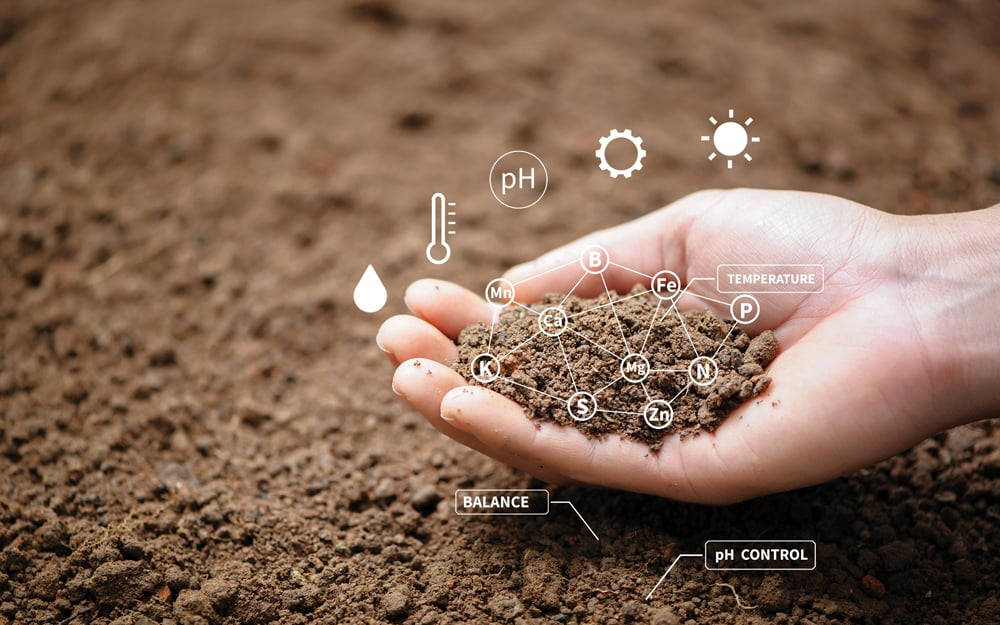
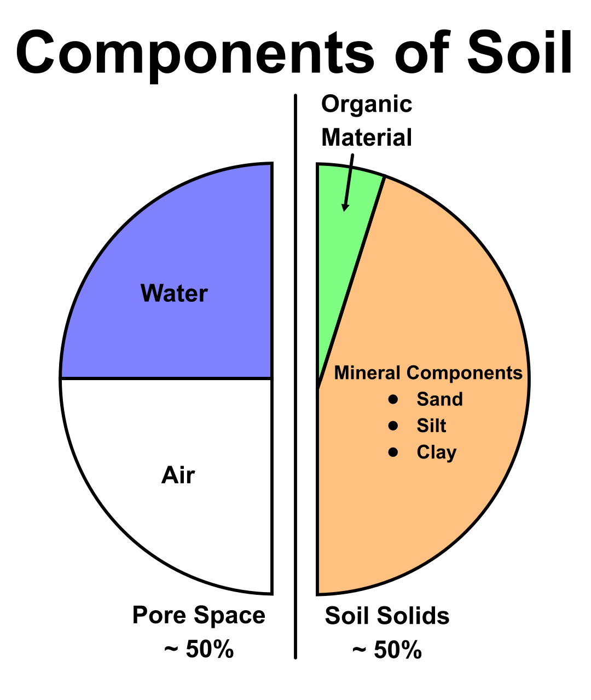
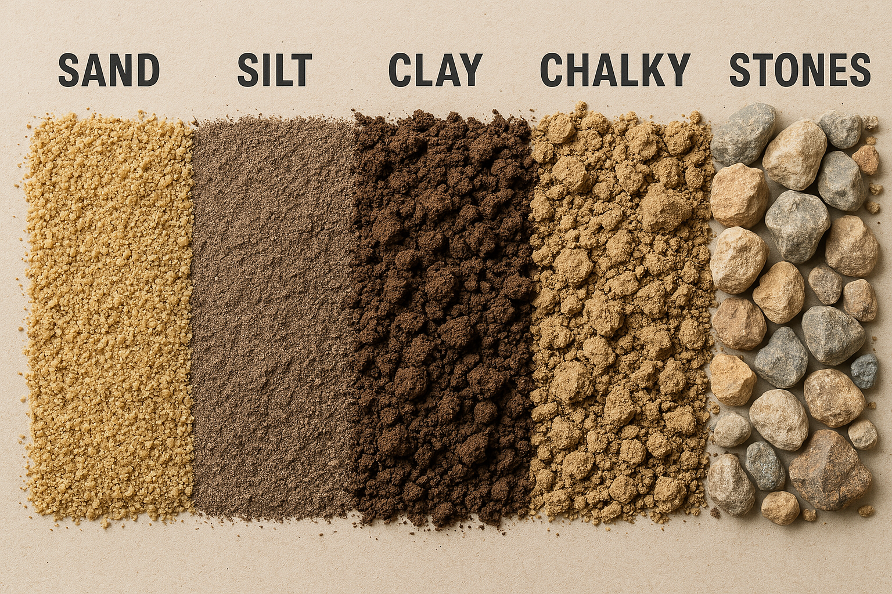
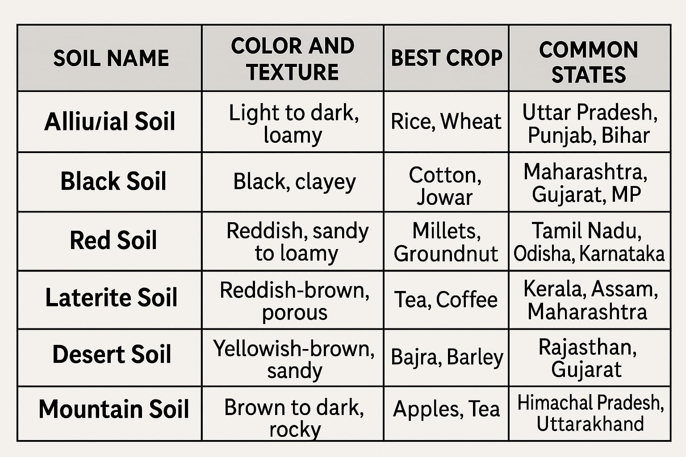
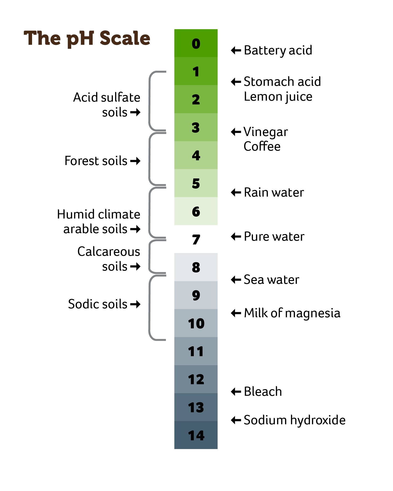
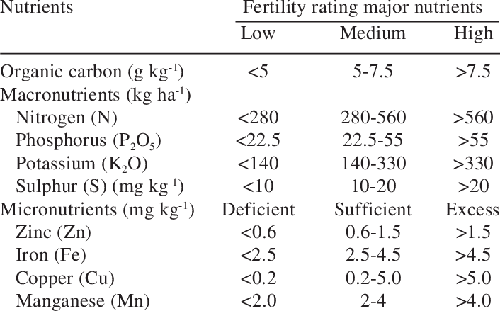
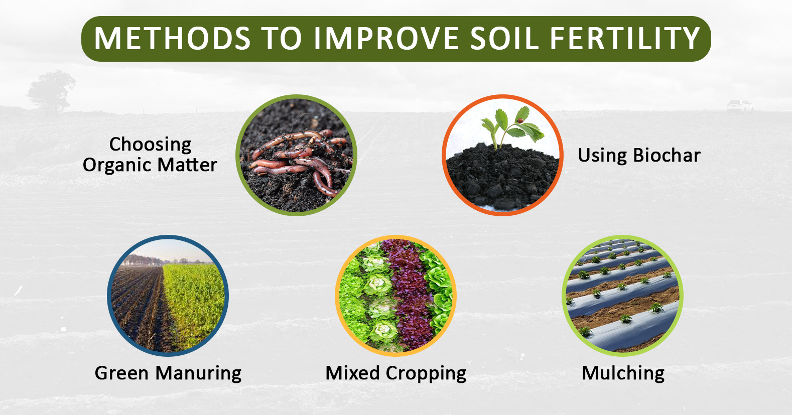

Soil is the loose, unconsolidated material on the Earth's surface, composed of minerals, organic matter, water, and air, that supports plant growth and is crucial for ecosystems and human activities.Soil consists of a solid phase of minerals and organic matter (the soil matrix), as well as a porous phase that holds gases (the soil atmosphere) and water (the soil solution). Accordingly, soil is a three-state system of solids, liquids, and gases. Soil is a product of several factors: the influence of climate, relief (elevation, orientation, and slope of terrain), organisms, and the soil's parent materials (original minerals) interacting over time. It continually undergoes development by way of numerous physical, chemical and biological processes, which include weathering with associated erosion. Given its complexity and strong internal connectedness, soil ecologists regard soil as an ecosystem.

Soil is composed of a matrix of minerals, organic matter, air, and water. Each component is important for supporting plant growth, microbial communities, and chemical decomposition.

Soils vary enormously in characteristics, but the size of the particles that make up a soil defines its gardening characteristics:

See some more types of soils below:

Soil pH is a measure of how acidic or alkaline soil is. It's determined by the concentration of hydrogen ions (H+) in the soil. The pH scale ranges from 0 to 14, with 7 being neutral.
Soil testing can help you determine how much limestone and/or fertilizer to apply.
Late summer through fall is a great time to test the soil.

Soil contains essential nutrients like nitrogen, phosphorus, potassium, calcium, sulfur, and micronutrients like manganese, copper, boron, and molybdenum, which are vital for plant growth and overall soil health.

To improve soil health, focus on practices like reducing tillage, increasing organic matter, using cover crops, diversifying plant species, and managing nutrients to create a healthy soil ecosystem.
Reduce Tillage:
Excessive tillage can damage soil structure, reduce organic matter, and harm beneficial soil organisms. Opt for no-till or reduced tillage practices whenever possible.
Avoid Soil Compaction:
Compacted soil restricts root growth and water infiltration, impacting plant health. Avoid driving machinery on wet soils and ensure proper drainage.
Add Organic Amendments:
Compost, manure, and other organic materials improve soil structure, water-holding capacity, and nutrient availability.
Use Cover Crops:
Cover crops, like legumes and grasses, add organic matter, prevent erosion, and improve soil structure.
Maintain Crop Residue:
Leaving crop residues on the soil surface protects it from erosion and adds organic matter as it decomposes.
Practice Crop Rotation:
Rotating crops with different root systems and nutrient requirements helps maintain soil health and reduces pest and disease problems.
Grow a Variety of Plants:
Different plant species support different soil microorganisms, leading to a more diverse and resilient soil ecosystem.
Promote Biodiversity:
Encourage a variety of plant species, including native plants, to support a wider range of soil organisms.
Test Your Soil:
Conduct regular soil tests to determine nutrient levels and pH, allowing for targeted fertilization.
Use Balanced Fertilizers:
Apply fertilizers based on soil test results to avoid nutrient imbalances and pollution.
Manage Water:
Ensure proper irrigation and drainage to prevent nutrient runoff and soil degradation.
Reduce Pesticide Use:
Excessive pesticide use can harm beneficial soil organisms, impacting soil health.
Provide Habitat for Beneficial Organisms:
Create conditions that support earthworms, microbes, and other beneficial soil organisms.
Keep Soil Covered:
Covering the soil with plants, mulches, or cover crops protects it from erosion, moderates soil temperature, and reduces water evaporation.
